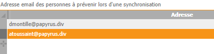

Les événements et anomalies constatés par les services de synchronisation sont journalisés dans un livre de bord (un fichier par environnement nommé SynchroLdap_NomEnvironnement.log et stocké dans le répertoire /Divalto/DivaltoLog).
De plus, un ou plusieurs administrateurs peuvent être notifiés par courriels des opérations effectuées.
Après avoir lancé la console d'administration LDAP, cliquez sur le bouton Administrateurs et ajoutez les adresses des personnes à contacter dans le tableau :

Le message de notification comporte en pièce jointe le rapport de synchronisation.
Attention : La notification par mail utilisant les fonctions Mapi, elle ne fonctionnera que si ce protocole est bien configuré dans DivaltoViewer (voir la rubrique "Utiliser le protocole MAPI pour l'envoi de mail ou de fax et le CRM" de la documentation consacrée à DivaltoViewer).